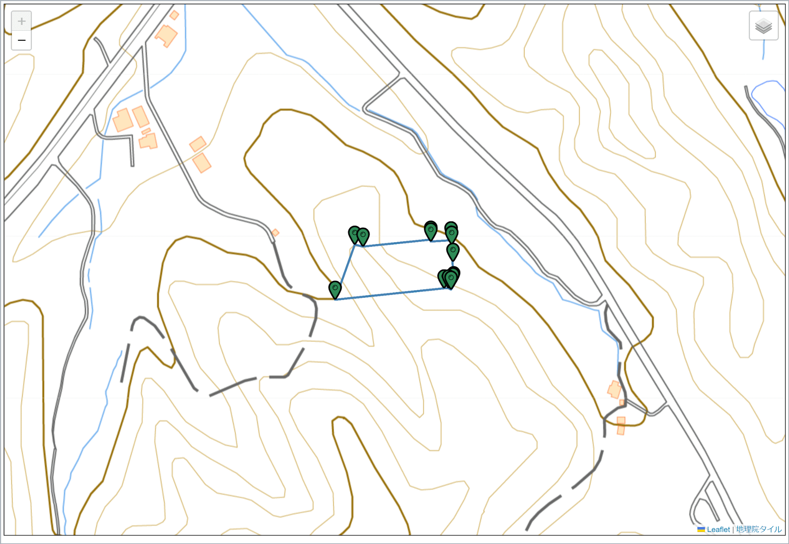
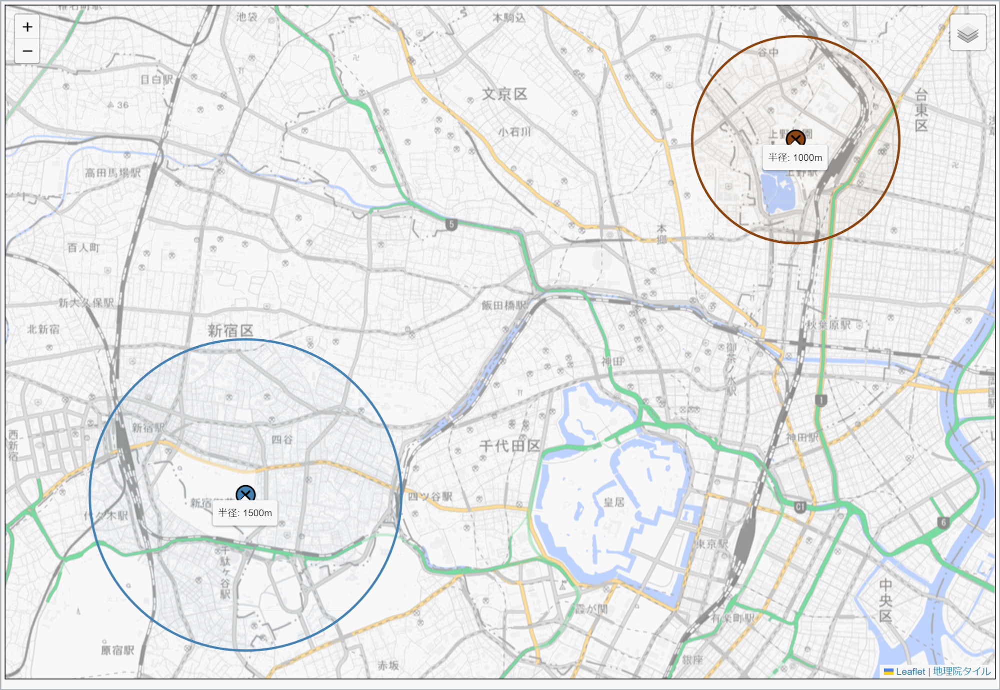
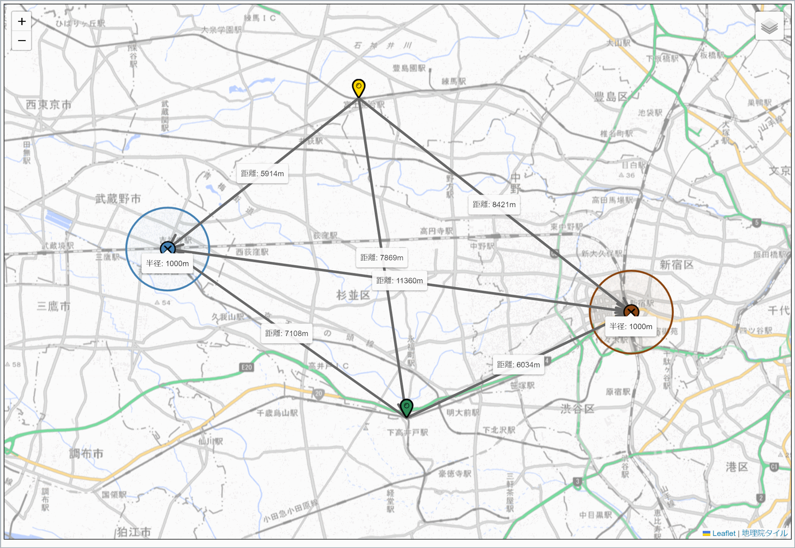

このサイトの説明
XY座標や緯度経度の示す場所にアイコンを追加したり、地図に半径を指定した円を表示したり、任意の地点間の距離を計測できるサイトです。
業務の中で、XY座標の場所のアイコンを航空写真に表示したり、土地と土砂災害警戒区域のそれぞれのXY座標の場所にアイコンを表示して2つの区域が重なるか調べたり、ある地点に半径1000メートルの円を表示してその範囲内に目的の土地があるか調べたりしたかったので、このサイトを作りました。
このサイトでできること
このサイトでは、次のことができます。
- XY座標または緯度経度のリストから一括してアイコンを追加する
- 測量成果のXY座標や緯度経度のリストが示す地図上の場所に一括してアイコンを追加する機能です。地図は地理院地図の通常地図に加えて航空写真も使えますので、航空写真に地積測量図のXY座標が示す場所を示したり、地積測量図のXY座標の場所を表示した後に、土砂災害警戒区域の座標値を入力して2つの区域を地図上で重ねて表示したりすることもできます。 
- 地図の指定した場所に円を追加する
- 地図の任意の場所にメートル単位で指定した半径の円を表示する機能です。地理院地図にも円を表示する機能がありますが、あちらはピクセル単位で半径を指定するのに対し、こちらはメートル単位で半径を指定しますので、ある場所から半径1km以内の範囲を調べたい場合はこちらの方が便利なはずです。 
- 地図の指定した場所にアイコンを追加する
-
地図の任意の場所にアイコンを追加できる機能です。地図に目印を設置したいときに使えます。

- 地図の任意の2点間の距離を計測する
-
地図上の任意の場所同士の距離を計測できる機能です。駅からの距離などを調べたいときに使えます。

- アイコンや円の中心点からの距離を計測する
- アイコンや円の中心点からの距離を計測できる機能です。アイコンは一括して登録したものも任意の場所に追加したものも同じように扱えますので、目印として置いたアイコンから一括して登録したアイコンまでの距離を計測したり、駅の上に表示した半径1000メートルの円の中心から、円の外にある目印アイコンまでの距離を計測したりするときに使えます。 
- アイコンや円を削除する
- 追加したアイコンや円は右クリックメニューからいつでも削除できます。
{kind=link}
{kind=link}
{kind=link}